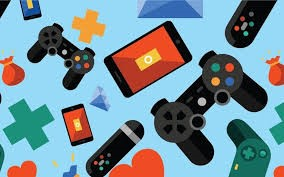

JOGOS: Vício ou Hobbie
Os jogos eletrônicos evoluíram muito nos últimos anos, e seus usuários não são apenas jovens, mas também adultos e crianças. Os jogos eletrônicos de hoje são mais uma forma de se divertir e passar o tempo. No entanto, eles podem ser um problema para os usuários, causando abusos e jogabilidade violenta.
Com o constante desenvolvimento da tecnologia, surgiram os jogos virtuais, que ao longo dos anos são cada vez mais utilizados por jovens em busca de formas de romper com a Internet. Hoje em dia, os jogos eletrônicos são uma forma de conectar pessoas, fazer amigos e distrair as pessoas. Quem tem um consumo moderado de jogos virtuais e com a devida segurança aproveita ao máximo a experiência, podendo também desenvolver habilidades como os reflexos mais desenvolvidos e a facilidade de tomar decisões rápidas.
Os jogos virtuais hoje são levados a sério, com campeonatos sendo organizados e pessoas sendo escolhidas. Além disso, os jogos eletrônicos não estão sendo feitos apenas para o público jovem, mas também para o público adulto, às vezes deixando os jogos violentos, havendo restrições para um determinado tipo de público. Os jovens, que não sabem aproveitar adequadamente o uso dos jogos virtuais, podem ter uma série de problemas, tanto psicológicos quanto de saúde. Como resultado, uma grande proporção de usuários de jogos eletrônicos violentos tende a ser mais violento com as pessoas ao seu redor.
Quanto ao assunto, a forma de evitar possíveis problemas é dar mais atenção à instituição que luta em prol dos jovens e das crianças, promovendo um trabalho de combate ao vício dos jovens aos jogos virtuais. Ao orientar os pais a evitarem esses problemas, leve os filhos ao psicólogo para que ele tenha um diagnóstico e saiba como tratar de forma que o jovem tenha um consumo moderado de jogos virtuais.
Aluno(a): Felipe Antônio